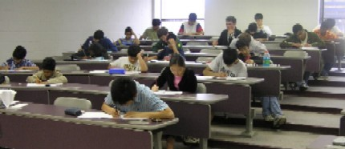
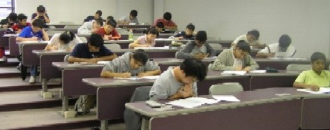

Lawrence Technological University, College of Arts and
Sciences
Department of Mathematics and Computer Science
44th Annual Mathematics
Competition


The LTU High School Math Competition returns on
Sunday, April 27, 2014
This is the 44th year for the
Competition. It is held in room S-321 in the LTU
Science Building from 1:00-3:00pm.
The Annual Mathematics Competition is open to all
high school students. There is no fee for the competition and no prior
registration is required. The test covers the mathematics commonly taught in
high school up to but not including calculus. The First Place receives a cash prize of $100, Second Place receives
a cash prize of $50, and Third Place receives a cash prize of $25. No calculators are allowed, and LTU will provide
all test materials.
- For more information, call the Mathematics and Computer Science Department
at (248) 204-3560 or email Professor Michael Merscher at mmerscher@ltu.edu.
- Lawrence Technological University is located at 21000 West Ten Mile Road,
Southfield, Michigan. LTU
campus map or call (248) 204-3560 for directions.
Previous Winners
Michael
Merscher ( mmerscher@ltu.edu )